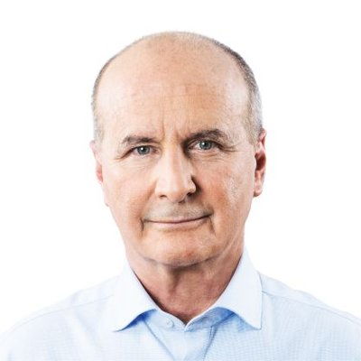

Jose María Figueres Olsen
Partido: Liberación Nacional (PLN)
Pensamiento: Hoy, renovamos nuestro compromiso de servicio y entrega a los intereses de nuestro pueblo. Nos inspiran los mismos principios socialdemócratas que han sido el sustento de tanta obra trascendental y nos alienta la ilusión de que Liberación Nacional sea siempre símbolo de esperanza para todos los costarricenses.
Llenos de ilusión, convencidos de que los mejores días de Costa Rica están cada vez más cerca, honramos nuestra historia y ratificamos nuestro compromiso de construir un mejor futuro. También ratificamos nuestra fe en las nuevas generaciones y dedicamos recursos a su capacitación, fortaleciendo las acciones y programas del Instituto de Formación Política Rodrigo Facio Brenes.